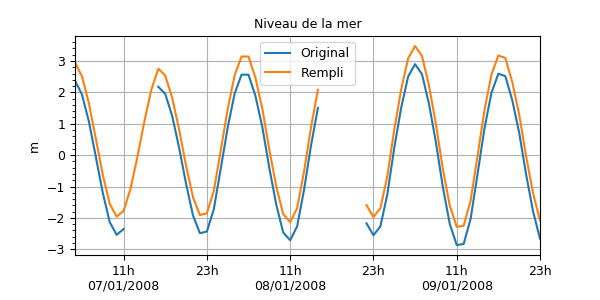

1.3.3.6.3.3.1. Remplissage 1D¶
Voir : fill1d() interp1d() fill2d().

Replissage de valeurs manquantes par interpolation le long d’un axe.
# -*- coding: utf8 -*-
# Lecture du niveau de la mer horaire
import cdms2, MV2
from vacumm.config import data_sample
f =cdms2.open(data_sample('mars3d.t.nc'))
xe = f('xe')
f.close()
xe.long_name = 'Original'
# On crée des trous
# - petits
xe[:4] = MV2.masked
xe[12:16] = MV2.masked
# - gros
xe[40:46] = MV2.masked
# On rempli les petits trous (5 heures max) par interpolation cubique
from vacumm.misc.grid.regridding import fill1d
import time ; t0=time.time()
xef = fill1d(xe, method='cubic', maxgap=5)
print time.time()-t0
xef.long_name = 'Rempli'
xef[:] += xef.max()/5. # on décalle pour les plots
# Plots
from vacumm.misc.plot import curve2, P, savefigs
P.rc('font', size=9)
curve2(xe, show=False, linewidth=1.5, figsize=(6, 3), top=.88, bottom=.15)
curve2(xef, show=False, linewidth=1.5, title='Niveau de la mer')
P.legend()
savefigs(__file__, pdf=True)
P.close()